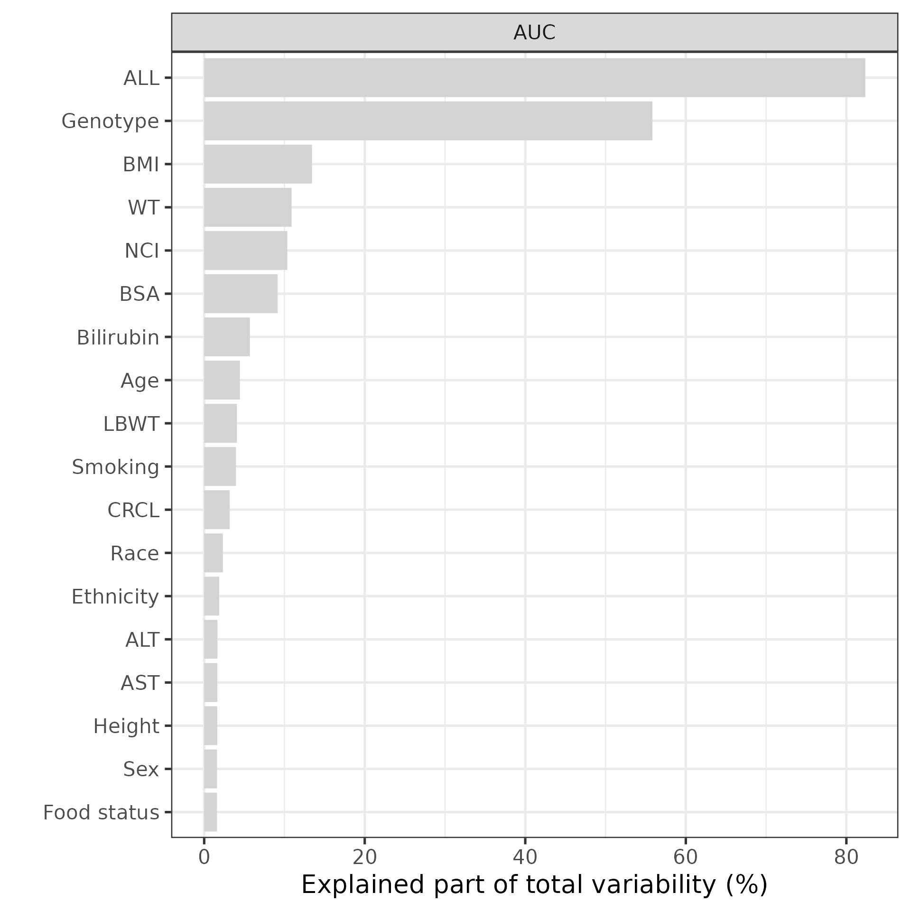
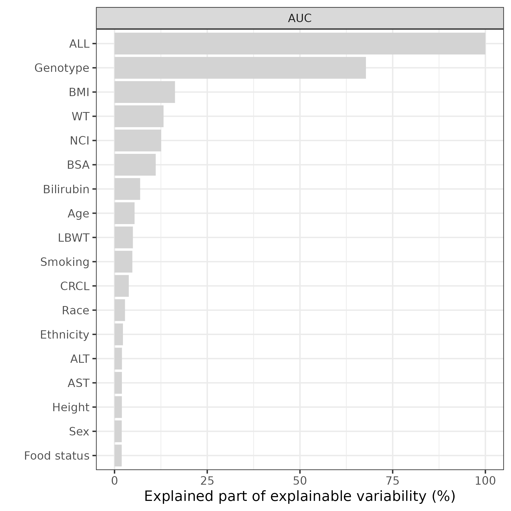

Calculate explained variability from a FREM model
explained_variability.RmdIntroduction
This vignette explains how to use the FREM package to create plots of the degree to which covariates manage to explain variability in the parameters of interest.
Setting up the pre-requisite
Load the package and identify which NONMEM FREM run that is going to be used for the forest plot.
Collect run information
Collect the file names related to the FREM run we are visualizing the results from. The utility function getFileNames returns a list of file paths for the .mod, .ext, .lst, .phi and .cov files.
## Specify the name of the FREM run
runname <- "run31"
modDevDir <- system.file("extdata/SimNeb", package = "PMXFrem")
## Collect the file names for the run
fremFiles <- PMXFrem::getFileNames(modName = runname,modDevDir = modDevDir)Define other model specific properties and read the data used for the base model.
numNonFREMThetas <- 7
numSkipOm <- 2
dfData <-
fread(system.file("extdata/SimNeb/DAT-2-MI-PMX-2-onlyTYPE2-new.csv",package="PMXFrem"),data.table = FALSE) %>%
distinct(ID,.keep_all = T)Define the covariate input.
covNames <- c(getCovNames(modFile = fremFiles$mod))
dfCovs <- dfData %>%
dplyr::select(covNames$orgCovNames,FOOD) %>%
mutate_all(function(x) return(1)) %>%
slice(rep(1,ncol(.)+1))
for(i in 2:nrow(dfCovs)) {
dfCovs[i, names(dfCovs) != names(dfCovs)[i-1]] <- -99
}FOOD is a time varying covariate and we need to condition on a value. Set is to 1 (=Fed).
dfCovs$FOOD <- 1
cstrCovariates<- c("All",names(dfCovs))
print(dfCovs)
#> AGE ALT AST BILI BMI BSA CRCL ETHNIC GENO2 HT LBWT NCIL RACEL SEX SMOK WT
#> 1 1 1 1 1 1 1 1 1 1 1 1 1 1 1 1 1
#> 2 1 -99 -99 -99 -99 -99 -99 -99 -99 -99 -99 -99 -99 -99 -99 -99
#> 3 -99 1 -99 -99 -99 -99 -99 -99 -99 -99 -99 -99 -99 -99 -99 -99
#> 4 -99 -99 1 -99 -99 -99 -99 -99 -99 -99 -99 -99 -99 -99 -99 -99
#> 5 -99 -99 -99 1 -99 -99 -99 -99 -99 -99 -99 -99 -99 -99 -99 -99
#> 6 -99 -99 -99 -99 1 -99 -99 -99 -99 -99 -99 -99 -99 -99 -99 -99
#> 7 -99 -99 -99 -99 -99 1 -99 -99 -99 -99 -99 -99 -99 -99 -99 -99
#> 8 -99 -99 -99 -99 -99 -99 1 -99 -99 -99 -99 -99 -99 -99 -99 -99
#> 9 -99 -99 -99 -99 -99 -99 -99 1 -99 -99 -99 -99 -99 -99 -99 -99
#> 10 -99 -99 -99 -99 -99 -99 -99 -99 1 -99 -99 -99 -99 -99 -99 -99
#> 11 -99 -99 -99 -99 -99 -99 -99 -99 -99 1 -99 -99 -99 -99 -99 -99
#> 12 -99 -99 -99 -99 -99 -99 -99 -99 -99 -99 1 -99 -99 -99 -99 -99
#> 13 -99 -99 -99 -99 -99 -99 -99 -99 -99 -99 -99 1 -99 -99 -99 -99
#> 14 -99 -99 -99 -99 -99 -99 -99 -99 -99 -99 -99 -99 1 -99 -99 -99
#> 15 -99 -99 -99 -99 -99 -99 -99 -99 -99 -99 -99 -99 -99 1 -99 -99
#> 16 -99 -99 -99 -99 -99 -99 -99 -99 -99 -99 -99 -99 -99 -99 1 -99
#> 17 -99 -99 -99 -99 -99 -99 -99 -99 -99 -99 -99 -99 -99 -99 -99 1
#> 18 -99 -99 -99 -99 -99 -99 -99 -99 -99 -99 -99 -99 -99 -99 -99 -99
#> FOOD
#> 1 1
#> 2 1
#> 3 1
#> 4 1
#> 5 1
#> 6 1
#> 7 1
#> 8 1
#> 9 1
#> 10 1
#> 11 1
#> 12 1
#> 13 1
#> 14 1
#> 15 1
#> 16 1
#> 17 1
#> 18 1Define parameter function
This is the same as the FFEM model created for diagnostics and simulations. Note that missing values must be handled for all covariates even if there were no missing covariate values in the observed data set. (There will be missing values in dfCovs.)
paramFunctionExpVar <- function(basethetas, covthetas,dfrow,etas,...) {
FRELFOOD <- 1
if (any(names(dfrow)=="FOOD") && dfrow$FOOD !=-99 && dfrow$FOOD == 0)
FRELFOOD <- (1 + basethetas[7])
MATFOOD <- 1
if (any(names(dfrow)=="FOOD") && dfrow$FOOD !=-99 && dfrow$FOOD == 0)
MATFOOD <- (1 + basethetas[6])
MATCOVTIME <- MATFOOD
FRELCOVTIME <- FRELFOOD
TVFREL <- basethetas[1]
TVCL <- basethetas[2]
TVV <- basethetas[3]
TVMAT <- basethetas[4]
TVD1 <- basethetas[5]
MU_2 <- TVD1
MU_3 <- log(TVFREL)
MU_4 <- log(TVCL)
MU_5 <- log(TVV)
MU_6 <- log(TVMAT)
D1FR <- MU_2 + etas[2]
FREL <- FRELCOVTIME*exp(MU_3)
CL <- exp(MU_4 + covthetas[1] + etas[3])
V <- exp(MU_5 + covthetas[2] + etas[4])
MAT <- MATCOVTIME* exp(MU_6 + covthetas[3] + etas[5])
D1 <- MAT * (1 - TVD1)
KA <- 1 / (MAT - D1)
## Compute AUC after 80 mg dose
AUC <- 80/(CL/FREL)
return(list(CL,FREL,AUC,V,MAT))
}
functionListName <- c("CL","Frel","AUC","V","MAT")Compute the explained variability
The function getExplainainedVarcomputes the total and explained variability. This can be done in 4 different ways, specified with the typeargument.
- based on FO delta rule
- based on data and calculated etas (ebes) - default
- the total variability is calculated using ETA samples instead of EBEs and average of individual data for fixed cov relationships
- the total variability is calculated using ETA samples instead of EBEs and using the first individual data for fixed cov relationships
If no fixed cov relationship are used, type=2 is exactly the same as type=3 but type=3 is faster.
dfres <- getExplainedVar(type = 2,
data = dfData,
dfCovs = dfCovs,
numNonFREMThetas = numNonFREMThetas,
numSkipOm = numSkipOm,
functionList = list(paramFunctionExpVar),
functionListName = functionListName,
cstrCovariates = cstrCovariates,
modDevDir = modDevDir,
modName = runname,
ncores = 10,
numETASamples = 100,
quiet = TRUE,
seed = 123
)The dfres data frame contains three columns with variability. The TOTVAR column is the maximum variability the model can predict (computed according to type 0-3 above). The TOTCOVVAR is the maximum variability the model can predict based on the covariates. COVVARis the amount of variability each covariate can explain by itself (or rather, how much variability the covariates without -99 on each row in dfCovs can explain).
Create the plot
The plotExplainedVar function can be used to visualize the degree of explained variability. The plot can visualize the explained variability relative the TOTVARcolumn (maxVar=1), how much of the overall variability can be explained, or relative to TOTCOVVAR (maxVar=2), i.e. how much of the explainable variability that can be explaines.
covariateNames <- c("ALL","Age","ALT","AST","Bilirubin","BMI","BSA","CRCL","Ethnicity","Genotype","Height","LBWT","NCI","Race","Sex","Smoking","WT","Food status")
plotExplainedVar(dfres,parameters = "AUC",maxVar = 1,covariateLabels = covariateNames)
covariateNames <- c("ALL","Age","ALT","AST","Bilirubin","BMI","BSA","CRCL","Ethnicity","Genotype","Height","LBWT","NCI","Race","Sex","Smoking","WT","Food status")
plotExplainedVar(dfres,parameters = "AUC",maxVar = 2,covariateLabels = covariateNames)